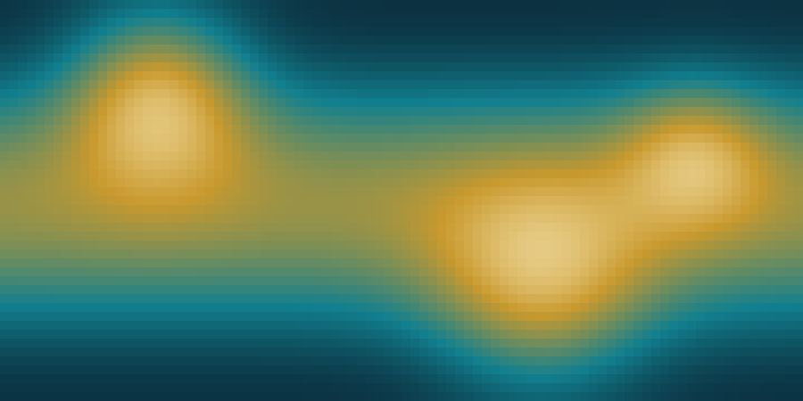

Draft text: edit each topic to match how you describe your own work. Replace the placeholder figure below with an image from your MATINS simulations (see README).
Magnetothermal evolution of neutron stars
Neutron stars carry the strongest magnetic fields known. As the field decays and rearranges inside the crust, it heats the star and shapes its surface temperature, with consequences for X-ray emission and for the activity of magnetars.
With collaborators I co-developed MATINS, a three-dimensional code that evolves the magnetic field and temperature of a neutron star together. It lets us follow complex field geometries and study how they imprint on the thermal maps we can compare with observations.
Gravitational waves and kilonovae
As a member of the LIGO-Virgo-KAGRA Collaboration, I work on what binary neutron star mergers can tell us when gravitational-wave data are combined with electromagnetic counterparts.
One line of work uses kilonova light curves to constrain the time elapsed since merger, in a Bayesian framework, and prepares for joint observations with the Vera C. Rubin Observatory.
Gamma-ray burst progenitors
I study how to tell the origin of gamma-ray bursts, in particular mergers of compact objects versus collapsing massive stars, using statistical classification of their observed properties.
